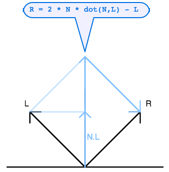
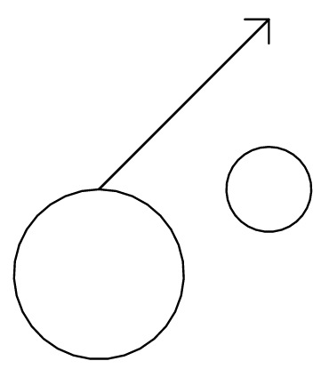

|
Notes for September 30 class -- More Ray Tracing
|
Phong model for specular reflection
The first really interesting model for surface reflection was developed by Bui-Tong Phong in 1973.
Before that, computer graphics surfaces were rendered using only diffuse lambert reflection.
Phong's was the first model that accounted for specular highlights.
The Phong model begins by defining a reflection vector R, which is a reflection of the
direction to the light source L about the surface normal N.
As we showed in class, and as you can see from the diagram on the right,
it is given by:
R = 2 (N • L) N - L
|
|

|
|
Once R has been defined, then the Phong model
approximates the specular component of surface reflectance
as:
srgb max(0, E • R)p )
where srgb is the color of specular reflection, p is a specular power,
and E is the direction to the eye (in our case, E = -W, the
reverse of the ray direction).
The larger the specular power p, the "shinier" the surface will appear.
To get the complete Phong reflectance, we sum over the lights in the scene:
argb +
∑i
lightColori
(
drgb max(0, N • Li) +
srgb max(0, E • R) p
)
where
argb,
drgb and
srgb
are the ambient, diffuse and specular color,
respectively, and p is the specular power.
|
|

|
|
|
Blinn model for specular reflection
A few years later, Jim Blinn created a variation on the Phong model
which produced somewhat more realistic highlights in extreme cases
(when the viewer is looking from an angle that is far from the surface normal).
The Blinn model is also appreciably faster in the special case where we
approximate E by a constant vector everywhere, and we assume
that the light direction L is constant throughout the object.
The basic idea is that a halfway vector H is defined
as the normalized midpoint between direction to light L and direction to eye E.
If E and L are constant, this needs to be done only once for each light source.
Then at each pixel, we just take the inner product between N and H:
srgb max(0, N • H)p
Because H tends to stay relatively near to N, to get the same level
of specularity the power p needs to be about three times greater
in the Blinn model than the corresponding value in the Phong model.
| |
|
|
Shadows
Casting shadows is relatively easy in ray tracing.
Once we have found a surface point S, then
for each light source, we shoot another ray
whose origin V' is just
the surface point S, and whose direction W' is the direction toward that light source Li.
We want to make sure that the ray misses the object
we are starting from, so we move the origin V' of our
new ray slightly out of the surface toward the light source. Our "shadow ray" will therefore be:
V' = S + ε Li
W' = Li
where ε can be any tiny positive value, such as 0.001.
If this shadow ray encounters any other object, then
the surface is in shadow at this pixel, and we
do not add in the diffuse and specular components of surface reflectance.
To the right above is an example of the surface not being in shadow.
Just below that is an example of a surface being in shadow, because
its light path is blocked by another object.
| |

|
|
Reflection
Another great thing about ray tracing is that we can
continue to follow the path of a light ray backward from
the camera, to model the behavior of mirror reflection.
Adapting the technique that we used to
calculate the reflection direction R for the Phong reflectance model,
but replacing L in that equation by -W (the direction back along the incoming ray):
W' = 2 (N • (-W)) N - (-W)
we can compute a new ray that starts at surface point S,
and goes into that reflected direction:
V' = S + ε W'
As shown in the figure on the right, we want to offset the
origin of this ray a bit out of the surface, so that the ray
does not accidentally encounter the object itself.
Whatever color is computed by this ray, we mix it into
the result of the Phong reflectance algorithm.
The result is the appearance of a shaded surface with a mirror finish.
| |

|
|
Boolean intersection
Another nice thing about ray tracing is that we can use it to do boolean modeling,
as we discussed in class.
For example, given two spheres A and B, we can compute the intersection (if any)
of those spheres by calculating their intersection along the ray.
Suppose, along a given ray, the values of t when entering and exiting
sphere A are Ain and Aout, respectively.
Also suppose that along this ray the values of t when entering and exiting
sphere B are Bin and Bout, respectively.
Then the intersection of the two shapes, along the ray, is given
by the maximum of the enter (in) values and the minimum of the exit (out) values:
tin of entry into intersection shape = max(Ain , Bin)
tout of exit from intersection shape = min(Aout , Bout)
If tin <
tout,
then the ray has intersected the intersection shape.
Otherwise, the ray has missed the intersection shape.
To shade the resulting intersection shape at a pixel,
we need to use the normal of the surface that was actually hit by the ray.
For example, if Ain > Bin,
then we need to use the surface normal of A.
| |
|
|
Refraction
In the real world many materials, such as oil, water, plastic, glass and diamond, are transparent.
A transparent material has an index of refraction which measures how much light
slows down as it enters that medium.
For example, the index of refraction of water is about 1.333,
of glass is about 1.5. The index of refraction of diamond, the substance with
the highest known index of refraction, is 2.42.
As in the diagram to the right,
you can add refraction to your ray tracing by following Snell's law:
n1 / n2 = sin(θ1) / sin(θ2)
to determine how much the ray should bend as it enters or exits a transparent object.
Note that you will need to change your ray tracing model to incorporate refraction.
In addition to your initial incoming ray, and any shadow or reflection rays, you also
need to add a refraction ray, which starts just inside the surface, and continues
inward.
Note that if you have ray traced to a sphere,
and are now computing where the refracting ray will exit that sphere,
you will want to compute the second root of the quadratic equation.
Then, after this refracting ray has exited out the back of the transparent sphere,
you will want to compute how much it refracts on its way out, and then
shoot a ray from there into the scene behind the sphere.
In general, you use the results of refraction by mixing the color it returns
together with whatever surface color you have computed due to pure reflection or
blinn/phong reflectance.
|
|

|
Homework (due before class on Wednesday Oct 8)
- Implement either the Phong or the Blinn reflectance model.
- Implement shadows.
- Implement boolean intersection between two spheres.
- Extra credit:
- Implement both Phong and Blinn reflectdance.
- Implement reflection.
- Implement refraction.
- Implement boolean intersection between more than two spheres.
- As always, make something cool and fun, try to create something interactive (using uCursor) and/or animated (using uTime).
|